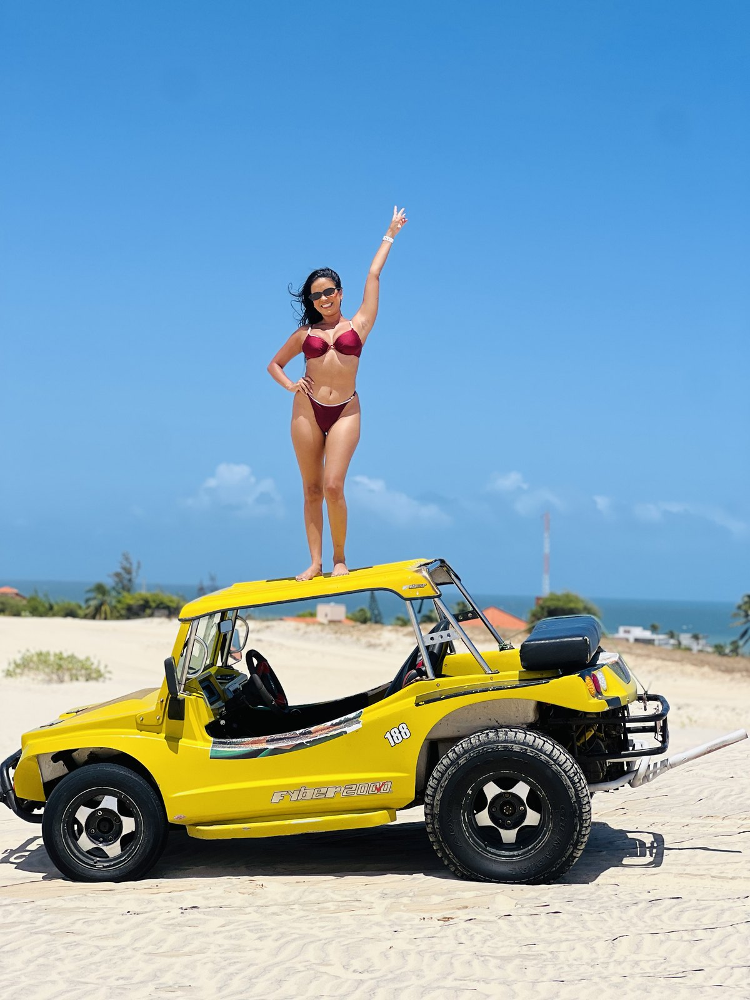

Experiência desde 2016
Há mais de 10 anos conduzindo com segurança, responsabilidade e proporcionando momentos inesquecíveis em Cumbuco.

Cumbuco · Ceará · Brasil
Olá, eu sou Igor Vasconcelos
Sou o responsável pela Cumbuco de Buggy e atuo como bugueiro há mais de 10 anos, levando visitantes para conhecer as dunas, lagoas, praias e os lugares mais especiais de Cumbuco.
Aqui você fala diretamente com quem vai realizar o seu passeio. Sem atravessadores, sem intermediários e sem complicação.
Você pode escolher um dos nossos roteiros ou, se preferir, montar seu próprio passeio:
Conversamos e adaptamos a experiência às suas preferências.
Meu compromisso é proporcionar um passeio privativo, seguro e personalizado e, acima de tudo, uma experiência que você realmente aproveite.


Há mais de 10 anos conduzindo com segurança, responsabilidade e proporcionando momentos inesquecíveis em Cumbuco.
Profissional credenciado para conduzir passeios turísticos com segurança e responsabilidade.
Seu passeio conta com seguro passageiro, para você aproveitar cada momento com tranquilidade.
Trilha sonora a bordo: a aventura fica ainda mais animada com sua música favorita.

Fotos e vídeos do seu passeio inclusos
Fale com IgorExperiências
Consulte condições e valores diretamente com Igor!
 Roteiro completo
Roteiro completoDunas, lagoas, praia e rio em uma experiência inesquecível. Conheça o melhor de Cumbuco a bordo de um buggy privativo, por trilhas e paisagens paradisíacas que fazem da região um dos destinos mais incríveis do Ceará.
Saímos para um parque de dunas móveis com destino à primeira parada:
Observação: as atividades são opcionais e cobradas à parte.
 Mais curto
Mais curtoUma aventura pelas dunas e lagoas mais famosas de Cumbuco. Ideal para quem quer conhecer os principais cenários em um passeio mais curto, com paradas para aproveitar e registrar momentos incríveis.
Saímos para um parque de dunas móveis com destino à primeira parada:
Observação: as atividades são opcionais e cobradas à parte.
Durante o passeio você pode incluir brincadeiras à parte nas lagoas. Consulte com Igor.


Converse diretamente com Igor e consulte disponibilidade e condições especiais para seu passeio.
Consultar valores e disponibilidadeBusca personalizada
Hotel, pousada ou casa de temporada em Cumbuco ou região: Igor vai até você. Preencha abaixo e envie seu pedido pelo WhatsApp.
Você escolhe o horário. Nós cuidamos da experiência!

Momentos reais
Sinta o clima
Dunas, lagoas, kitesurf e um pôr do sol inesquecível. Assista e imagine você aqui.
Reserve seu passeio pelo WhatsAppSua segurança
Veículo identificado, documentado e autorizado para realizar passeios turísticos em Cumbuco.
Antes de embarcar, verifique se o buggy está devidamente autorizado para realizar passeios turísticos em Cumbuco.
Indica que o veículo está autorizado a exercer serviço remunerado de transporte, assim como os veículos utilizados em serviços de táxi.
Os buggies credenciados são identificados por uma numeração própria, de 01 a 189, correspondente aos veículos credenciados no município de Caucaia.
O bugueiro deve portar um alvará emitido pela Secretaria de Transportes da Prefeitura, que identifica e autoriza o veículo e o profissional para a realização de passeios de buggy em Cumbuco.
Ao escolher um bugueiro credenciado, você pode conferir a documentação e a identificação do veículo antes de iniciar o passeio.
Quem passeou recomenda
Veja o que clientes reais dizem no Google. Fez o passeio com o Igor? Conte como foi: sua avaliação ajuda outros turistas a escolher.
Tivemos uma das mais marcantes experiências nesse lugar. Foi uma sorte ter como nosso guia e bugueiro o Igor. Atenção impressionante e todo cuidado conosco. Conhecemos trilhas e lugares incríveis e um pôr do sol que de longe foi o mais perfeito até hoje. Quero aqui agradecer ao Igor por nos proporcionar isso. Forte abraço e até a próxima. Osnir e Bruno
Ótima experiência, com emoção e segurança. Igor foi muito atencioso desde o atendimento no WhatsApp. Ele, juntamente com o Lucas, nos conduziram pelo roteiro completo nas dunas e lagoas de Cumbuco e nos deixaram a vontade para aproveitar as paradas. De quebra, recebemos registros lindíssimos feitos pelo Igor. Recomendo!
Excelente passeio. Igor muito atencioso e educado do momento que fechamos via WhatsApp até o fim do passeio. Passeio incrível, lugares lindos e emoção na dose certa!
O passeio foi super divertido. O buggueiro tem boa comunicação, deu dicas, chegou no horário combinado para nos buscar e deixou a gente curtir o passeio no nosso tempo. Recomendo.
Foi excelente o passeio! O Igor me levou nos melhores lugares para conhecer e tirou as melhores fotos!! Recomendo muito!
Excelente atendimento! Guia Igor super educado e prestativo. Passeio top demais !!
Ótimo passeio, condutor do Buggy super atencioso. Valor justo e ótimo atendimento
Passeio espetacular, atendimento excelente do igor, valeu muito a pena
Passeio maravilho vale muito a pena , adorei
Foi uma experiência inesquecível! Recomendo muito ❤️
Passeio Sensacional
Comentários reais, exibidos como foram publicados.
Deixe sua avaliação com estrelas no Google. Leva menos de 1 minuto e faz toda a diferença para o Igor.